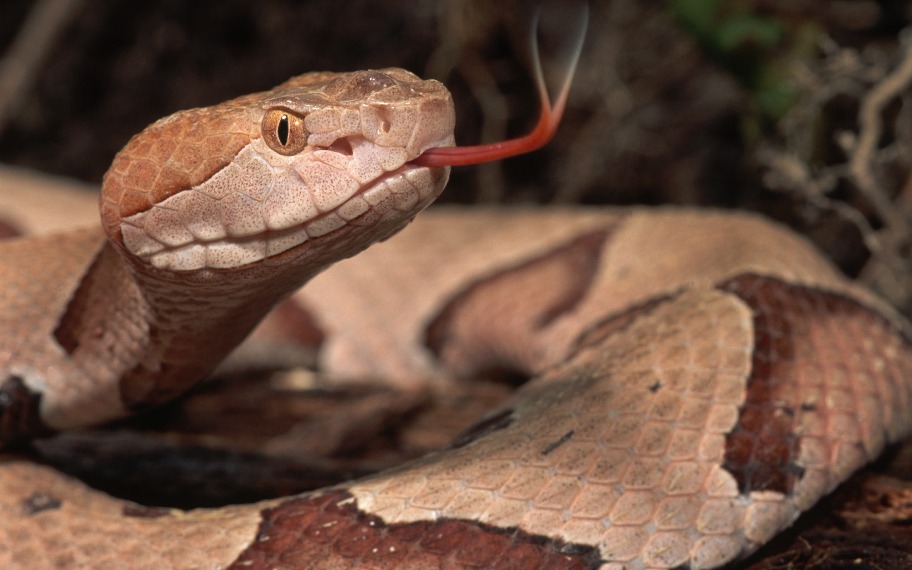
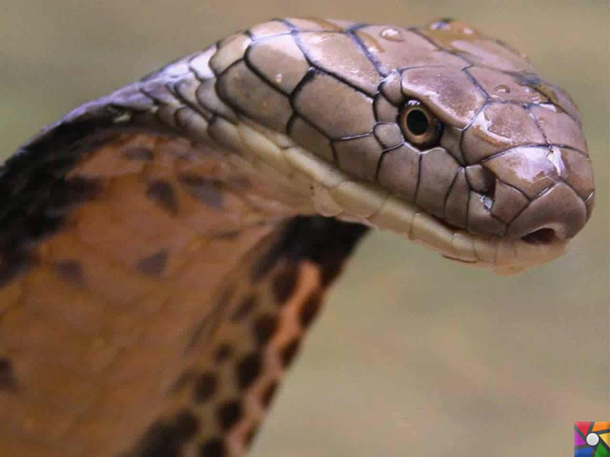

Kısaca: Yılan uzun vücutlu, bacaksız, sürüngenlerin genel adı. Omurgalı hayvanlardan sürünenler (Reptilia) sınıfının, pullu sürüngenler (Squamata) takımına giren kalabalık bir alt takımı meydana getirirler. Boalar (Boaefornia), su yılanları (Colubriformia), solucan yılanları (Opoterodonta), geniş başlılar (Amblycephalidiformia) ve oluklu zehirdişliler (Solenoglypha) olmak üzere beş bölüme ayrılırlar. Bu bölümler de çeşitli familyaları ihtiva ederler. Dünyada 3000 kadar yılan türü bilinmektedir. Bunların çok azı zehirlidir. Sıcak bölgelerde yaşayan soğukkanlı (değişken ısılı) etçil hayvanlardır. Dış kulak deliği ve zarı yoktur. Dillerinin ucu çatallı olup, alt çenedeki bir yarıktan uzatılıp çekilebilmektedir. Alt ve üst göz kapakları birleşerek saat camı gibi şeffaf saydam bir lens meydana getirmiştir.
Dişler besini tutmaya yarar ve geriye doğru yatıkçadır. Zehirli yılanlarda ön çenede uzun oluklu zehir dişleri de vardır. Bunlarda tükrük bezleri, zehir bezine dönüşmüştür. Yürekleri üç gözlüdür. Yarım bir zar ile kısmen ayrılmış olan karıncıkta karışık kan bulunur. Vücutlarında da karışık kan dolaşır. Güneşin altında yatarak vücutlarını sıcak kayalara temas ettirerek, vücut ısılarını yükseltirler. Sonbaharda, kuytu yerlere çekilerek kışı hareketsiz ve uyuşuk olarak geçirirler. İlkbaharda, kış uykusundan uyanınca tekrar ortalıkta görünmeye başlarlar.
Canlı hayvan avlayarak beslenirler. Böcek, karınca yiyenleri olmakla beraber, fare gibi kemirgenlerin baş düşmanıdırlar. Boa ve piton gibi büyükleri avlarını sıkarak öldürdükten sonra yutarlar. Bütün yılanlar avlarını parçalamadan bütün olarak yutarlar. Çeneleri 180° ye kadar açıldığından iri avlarını yutmakta zorluk çekmezler. Küçük bir bahçe yılanı, iri bir kurbağayı rahatça yutabilir. Ziraat için zararlı, fare, tavşan gibi kemirgenleri yiyerek yok ettiklerinden bir bakıma faydalı da sayılırlar. Kuş ve kertenkele de yerler. Zehirlerinden de panzehir yapılarak faydalanılmaktadır.
Yılanlar yumurtlayarak ürerler. Yumurtalardan ergine benzer yavrular çıkar. Bunlar hemen başlarının çevresine bakarlar. Boa, anakonda ve engereklerin çoğu yavrularını doğurur. Bunlar gerçek doğum değildir. Yumurtalar ana karnında gelişip açıldığından doğum gibi görülür. Buna "ovoviviparite" denir. Gebelik süresi 2 aydır.
 